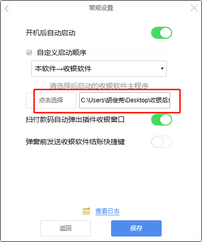
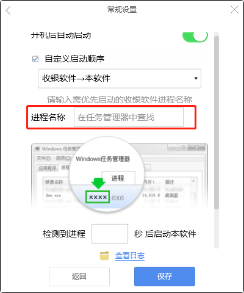
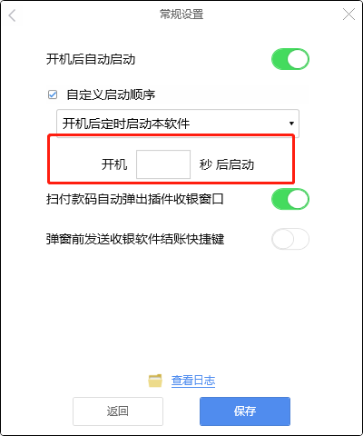
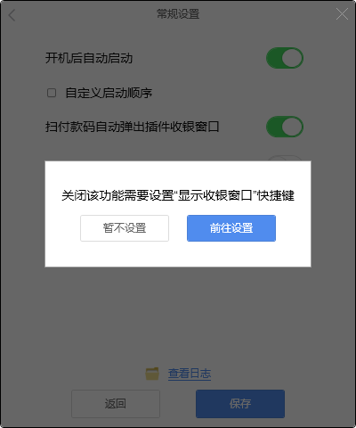
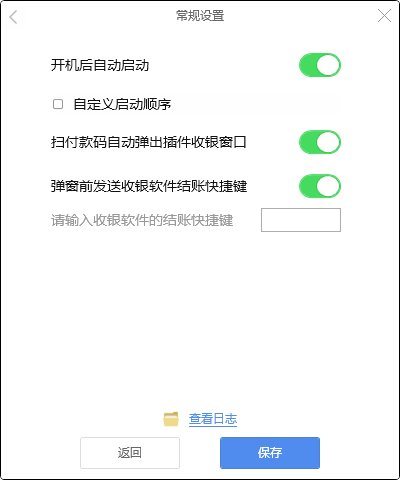
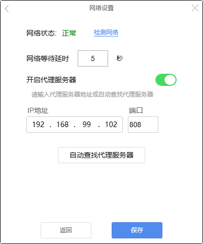

常规设置与网络设置
1.常规设置
1.1开机自动启动
默认开启，关闭后客户端不会随电脑的启动而启动。

1.2启动顺序
自定义启动顺序共有三种模式：
（1）本软件→收银软件
该模式是先启动本软件再启动收银软件，一般是为了获取键盘的控制权，选择该模式的时候只需在选择文件中选中收银软件即可。

（2）收银软件→本软件
该模式是先启动收银软件再启动本软件，一般是为了防止收银软件报错，选择该模式的时候只需手动输入收银软件的进程名称即可。

（3）开机后定时启动本软件
该模式是在一段时间后再启动本软件，一般是为了避开某些软件的强杀，选择该模式只需要设置定时时间即可。

1.3扫付款码弹出收银窗口
该功能默认开启，关闭后扫付款码不会弹出收银窗口。
在关闭该功能时客户端会提示必须设置收银窗口的快捷键，如不设置则该功能无法关闭。

1.4弹窗前发送收银软件快捷键
某些收银软件只有在结账页面才显示客显金额，该功能就是在扫付款码后，先发送一个收银软件结账页面的快捷键，然后抓到客显金额，再弹出收银页面。

2.网络设置
2.1网络状态
该功能可以检测当前网络状态，点击“检测网络”会弹出一个CMD命令去PING百度网址www.baidu.com，通过PING出来的数据判断网络状态情况。

2.2网络等待延时
网络等待延时默认5秒，该功能控制账单上传的延迟时间。
2.3代理服务器
代理服务器的设置方法详见《1.2.3收银台没有连接外网的解决方案》，只需将IP地址设置为代理服务器的监听地址即可；也可以使用自动查询代理功能，自动查询当前环境可用的代理服务器。
